Об организаторах
Исследование Среды своих — попытка зафиксировать реальное положение дел в вопросе взаимодействия НКО и фандрайзеров. Миссия Среды своих — помогать проектам, профессионалам из сферы благотворительности развиваться, расти и взаимодействовать.
У вас есть предложения о сотрудничестве в рамках этого или других проектов? Напишите нам:
org@sredasvoih.ruУчредители


Комитет общественных связей и молодежной политики города Москвы играет ключевую роль в развитии благотворительности и добровольчества в столице. Он взаимодействует с НКО и поддерживает социальные инициативы, волонтёрские проекты и помогает жителям Москвы участвовать в благотворительности.
Организатор проекта и заказчик исследования
Пространство для работы, учёбы и развития в центре Москвы, где собираются люди, влияющие на сферу благотворительности: сотрудники и лидеры НКО, представители бизнеса, искусства, медиа и государства.
Среда своих предоставляет возможности для социальных проектов и их команд
- пространство в Москве для работы и проведения публичных событий
- студии для производства фото, видео и другого контента
- образовательные модули, консалтинг и другие интеллектуальные ресурсы для развития и реализации конкретных задач НКО и профессионалов сферы